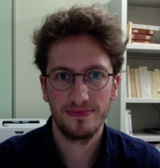

Il est responsable de la partie numérique du site, et de l'encodage en TEI.
Équipe
Gabay, Simon

Post-doctorant à l'université de Neuchâtel (Suisse), il prépare sa thèse d'habilitation sur Sévigné.
Lignereux, Cécile
Maître de conférence à l'université Grenoble-Alpes (France), elle est l'autrice d'une thèse sur Sévigné.
La bibliographie présente sur ce site est tirée de sa thèse.